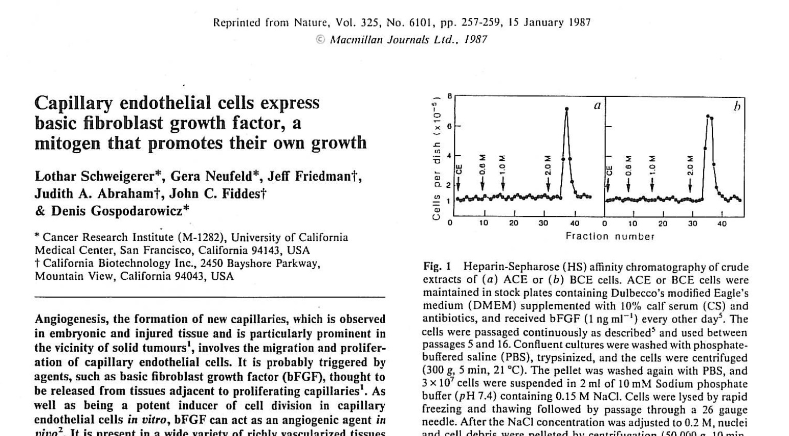

Kultivierte Gefäßendothelzellen aus Rinderhirn.
1985
But it's always the same old story
You never know what you've got till it's gone
All I need is a miracle.
Diese Zeilen sangen Mike and the Mechanics 1985 in ihrem Song All I Need Is a Miracle. Ich mochte Melodie und Refrain. Nur mit einer Zeile konnte ich nichts anfangen: You never know what you've got till it's gone. Das traf auf mich wirklich nicht zu. Ich hatte ja noch überhaupt nichts gehabt, was ich hätte verlieren können. Aber ein kleines Wunder hätte ich schon gebrauchen können.
Wenn ich morgens mit meinem Hirsch durch den Golden Gate Park zur UCSF fuhr und dabei K-FOG hörte, gingen mir solche Gedanken durch den Kopf. Von außen betrachtet schien alles bestens zu laufen. Ich arbeitete in San Francisco. Im Labor von Denis Gospodarowicz. Ich wohnte mit Hilde in einem kleinen Holzhaus im Sunset District. Die Aussicht aus dem Laborfenster ging bis zum Pazifik. Aber meine Arbeiten im Labor liefen schlecht.
Judah Folkman von der Harvard Medical School hatte die damals noch ziemlich gewagte Theorie aufgestellt, dass Tumoren nur dann dauerhaft wachsen können, wenn sie neue Blutgefäße bilden. Ohne Blutversorgung kein Tumorwachstum. Und deshalb vermutete Folkman, dass Krebszellen Stoffe produzieren müssten, die das Wachstum neuer Gefäße anregen. Genau solche Stoffe interessierten uns im Labor.
Mit FGF hatten wir gerade den ersten Angiogenesefaktor überhaupt gereinigt und sequenziert. Nun sollte ich herausfinden, wo dieser Faktor vorkam und wie man ihn nachweisen konnte. Eigentlich klang das nach einer lösbaren Aufgabe. Denn während meiner Zeit in Gießen hatte ich bereits mit einem solchen Verfahren, einem Radioimmunoassay gearbeitet. Wesentlich dabei sind spezifische Antiköper als Nachweisinstrument. Also wollte ich als erstes Antikörper gegen bFGF herstellen. Ich immunisierte insgesamt sechs Kaninchen. Diese Mistviecher wollten aber nicht so richtig mitziehen. Sie machten einfach keine Antikörper gegen bFGF.
Also wechselte ich die Strategie. Wenn Folkman recht hatte, dann müssten Tumoren doch Angiogenesefaktoren enthalten. Also besorgte ich mir Gewebe aus der Pathologie und begann zu suchen. Ich fand nichts. Dann fingen sich meine Zellkulturen auch noch einen Pilz ein und waren hinüber. Alles für die Katz. Nichts funktionierte. Ich dachte an Murphy und sein Gesetz: Anything that can go wrong will go wrong. Er hatte es für mich persönlich erfunden!
Ich hatte schon bessere Zeiten erlebt! Ich grübelte viel, hatte wenig Appetit und wollte oft einfach nur meine Ruhe haben. Gelegentlich spielte ich sogar mit dem Gedanken, alles hinzuschmeißen. Die Natur hatte wirklich null Interesse daran, meine Hypothesen zu bestätigen! Aber von meiner Mutter habe ich eine gehörige Portion Hartnäckigkeit geerbt und die kam mir nun zugute. Wie in meinem Song „Ich geb nicht auf“ festgehalten, machte ich einfach weiter.
Und nach Wochen ergab sich ein erster Lichtblick. Die Kaninchen produzierten auf einmal Antikörper! Weitere Experimente begannen zu funktionieren. Dann noch mehr. Das Nachweisverfahren für bFGF lief endlich und plötzlich konnte ich systematisch nach dem Faktor suchen. Ich schaute überall nach. Und dabei machte ich eine Beobachtung, die mich zunächst zugleich faszinierte und irritierte: ich fand bFGF in Endothelzellen! Also genau in den Zellen, die die Innenwand von Blutgefäßen bilden. Das ergab keinen Sinn.
Warum sollte eine Endothelzelle ihren eigenen Wachstumsfaktor produzieren? Und weshalb konnte sie ihn weder freisetzen noch selbst nutzen? Tagelang ging mir diese Frage durch den Kopf. Irgendwann kam mir dann der Gedanke. Was passiert eigentlich, wenn eine Endothelzelle zugrunde geht? Dann wird ihr Inhalt frei. Und damit auch das gespeicherte bFGF. Plötzlich ergab alles einen Sinn. Wenn ein Blutgefäß verletzt wird, könnten die abgestorbenen Zellen ihren Wachstumsfaktor freisetzen und damit die benachbarten gesunden Zellen zur Teilung anregen. Zum ersten Mal hatte ich das Gefühl, einer wirklich interessanten Beobachtung auf der Spur zu sein.

Also schrieb ich ein Manuskript und schickte es an Nature. Wie schon in Gießen: erste Publikation als Erstautor. Wenige Wochen später kam die Antwort. Abgelehnt. Ich war verärgert. Denn ich war überzeugt, dass die Beobachtung wichtig war. Also schrieb ich dem Herausgeber und erklärte ihm, weshalb ich die Arbeit für außergewöhnlich hielt. Er antwortete und war bereit, sich eine überarbeitete Version noch einmal anzusehen. Eine Garantie, dass sie angenommen werde, gebe es allerdings nicht. Also überarbeitete ich das Manuskript und schickte es erneut ein. Wieder vergingen einige Wochen.
Dann kam die nächste Antwort. Wieder abgelehnt. Diesmal hatte einer der Gutachter die Arbeit ausdrücklich gelobt. Der andere war dagegen. Seine Argumente überzeugten mich allerdings nicht. Also schrieb ich erneut an den Herausgeber, ging Punkt für Punkt auf die Kritik ein und bat darum, einen dritten Gutachter einzuschalten. Der Herausgeber willigte ein. Der dritte Gutachter unterstützte die Veröffentlichung. Der zweite gab schließlich klein bei. Und plötzlich war sie da.
Die Zusage.
Nach Monaten voller Fehlschläge fühlte sich das an, als hätte jemand das Licht eingeschaltet. Und nun fluppte es. Wir warfen ein Manuskript nach dem anderen raus. Es ging wie das Brötchenbacken. Denis, Gera und ich beherrschten in den nächsten Monaten das FGF-Feld.
Plötzlich hatte ich nicht nur Ergebnisse, sondern auch ein Verlängerungsstipendium der Deutschen Krebshilfe, zusätzliches Gehalt von Denis und Publikationen in den besten Fachzeitschriften der Welt.
Wenn ich nun mit meinem Hirsch durch den Golden Gate Park zur Arbeit fuhr und Bonnie Simmons meinen Lieblingssong auf K-FOG spielte, dann hörte ich ihn mit einem anderen Bewusstsein:
„All I Need Is a Miracle.“
Mein Wunder war eingetreten.